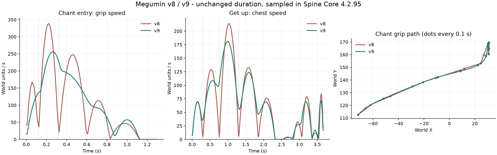

左：v8，右：v9。依次为进入吟唱、脱力趴地、撑地起身、死亡。两侧按动作触发时刻对齐，均来自游戏实时录像，仅裁切角色区域并排展示；没有变速或补帧。
查看 v9 全部 19 个动作与完整战斗 · 下载对照视频 · 查看 v8 原录像
动作总时长不变，经过姿势不再各自减速到零。身体与握点采用连续弧线，并给头、手和披风不同的先后时序。仍保留动作起止和真实停顿；独立角度画稿之间仍可能有轮廓差异。

虚线标出本轮五个停顿回归检查点，轨迹点间隔为 0.1 秒。数值来自 Spine Core 4.2.95；曲线通过不替代原速画面验收。